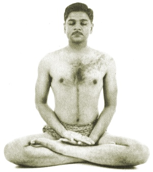

Sacred Texts Hinduism Yoga
Buy this Book at Amazon.com
|  | Relax With Yogaby Arthur Liebers[1960] |
This is a short guide to modern western Raja Yoga, illustrated by a couple of dozen photos of yogic postures (asanas). This little book is a surprisingly comprehensive introduction to the metaphysical background of yogic practice, along with a host of related practical matters.
The exercises introduced here are all fairly easy and well-described. When this was written, Yoga teachers were far and few between in the US, so this was by necessity a self-help guide. While, strictly speaking, I wouldn't recommend trying these exercises (particularly the mental ones) without a teacher, at least it isn't hard to find Yoga classes any more.
In the first chapter (p. 7), Liebers traces stereotypical misconceptions of Yoga by mid-century Americans to sideshow performers and "supposedly esoteric literature." By the latter one infers is meant the 'Yogi Publication Society' books, for instance, Raja Yoga, which bears comparison with this book.